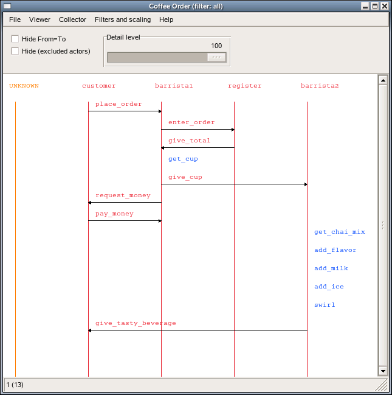

Tutorial
View SourceVisualizing Message Sequence Charts
The easiest way of using ET, is to just use it as a graphical tool for
displaying message sequence charts. In order to do that you need to first start
a Viewer (which by default starts a Collector):
{ok, ViewerPid} = et_viewer:start([{title,"Coffee Order"}]),
CollectorPid = et_viewer:get_collector_pid(ViewerPid).Then you send events to the Collector with the function
et_collector:report_event/6 like this:
et_collector:report_event(CollectorPid,85,from,to,message,extra_stuff).The Viewer will automatically pull events from the Collector and display
them on the screen.
The number (in this case 85) is an integer from 1 to 100 that specifies the "detail level" of the message. The higher the number, the more important it is. This provides a crude form of priority filtering.
The from, to, and message parameters are exactly what they sound like.
from and to are visualized in the Viewer as "lifelines", with the message
passing from one to the other. If from and to are the same value, then it is
displayed next to the lifeline as an "action". The extra_stuffvalue is simply
data that you can attach that will be displayed when someone actually clicks on
the action or message in the Viewer window.
The module et/examples/et_display_demo.erl illustrates how it can be used:
-module(et_display_demo).
-export([test/0]).
test() ->
{ok, Viewer} = et_viewer:start([{title,"Coffee Order"}, {max_actors,10}]),
Drink = {drink,iced_chai_latte},
Size = {size,grande},
Milk = {milk,whole},
Flavor = {flavor,vanilla},
C = et_viewer:get_collector_pid(Viewer),
et_collector:report_event(C,99,customer,barrista1,place_order,[Drink,Size,Milk,Flavor]),
et_collector:report_event(C,80,barrista1,register,enter_order,[Drink,Size,Flavor]),
et_collector:report_event(C,80,register,barrista1,give_total,"$5"),
et_collector:report_event(C,80,barrista1,barrista1,get_cup,[Drink,Size]),
et_collector:report_event(C,80,barrista1,barrista2,give_cup,[]),
et_collector:report_event(C,90,barrista1,customer,request_money,"$5"),
et_collector:report_event(C,90,customer,barrista1,pay_money,"$5"),
et_collector:report_event(C,80,barrista2,barrista2,get_chai_mix,[]),
et_collector:report_event(C,80,barrista2,barrista2,add_flavor,[Flavor]),
et_collector:report_event(C,80,barrista2,barrista2,add_milk,[Milk]),
et_collector:report_event(C,80,barrista2,barrista2,add_ice,[]),
et_collector:report_event(C,80,barrista2,barrista2,swirl,[]),
et_collector:report_event(C,80,barrista2,customer,give_tasty_beverage,[Drink,Size]),
ok.When you run the et_display_demo:test(). function in the example above, the
Viewer window will look like this:

Four Modules
The event tracer framework is made up of four modules:
etet_collectoret_vieweret_selector
In addition, you'll probably want to familiarize yourself with the dbg module
and possibly seq_trace module as well.
The Event Tracer Interface
The et module is not like other modules. It contains a function called
et:trace_me/5. Which is a function that does not do any useful stuff at all.
Its sole purpose is to be a function that is easy to trace. A call to it may be
something like:
et:trace_me(85,from,to,message,extra_stuff).The parameters to et:trace_me/5 are the same as to
et_collector:report_event/6 in the previous
chapter. The big difference between the two is in the semantics of the two
functions. The second actually reports an Event to the Collector while the
first does nothing, it just returns the atom hopefully_traced. In order to
make the parameters to et:trace_me/5 turn up in the Collector, tracing of
that function must be activated and the Collector must be registered as a
Tracer of the Raw Trace Data.
Erlang tracing is a seething pile of pain that involves reasonably complex
knowledge of clever ports, tracing return formats, and specialized tracing
MatchSpecs (which are really their own special kind of hell). The tracing
mechanism is very powerful indeed, but it can be hard to grasp.
Luckily there is a simplified way to start tracing of et:trace_me/5 function
calls. The idea is that you should instrument your code with calls to
et:trace_me/5 in strategic places where you have interesting information
available in your program. Then you just start the Collector with global
tracing enabled:
et_viewer:start([{trace_global, true}, {trace_pattern, {et,max}}]).This will start a Collector, a Viewer and also start the tracing of
et:trace_me/5 function calls. The Raw Trace Data is collected by the
Collector and a view of it is displayed on the screen by the Viewer. You can
define your own "views" of the data by implementing your own Filter functions
and register them in the Viewer.
The Collector and Viewer
These two pieces work in concert. Basically, the Collector receives
Raw Trace Data and processes it into Events in a et specific format
(defined in et/include/et.hrl). The Viewer interrogates the Collector and
displays an interactive representation of the data.
You might wonder why these aren't just one module. The Collector is a generic
full-fledged framework that allows processes to "subscribe" to the Events that
it collects. One Collector can serve several Viewers. The typical case is
that you have one Viewer that visualizes Events in one flavor and another
Viewer that visualizes them in another flavor. If you for example are tracing
a text based protocol like HTML (or Megaco/H.248) it would be useful to be
able to display the Events as plain text as well as the internal
representation of the message. The architecture does also allow you to implement
your own Viewer program as long as it complies to the protocol between the
Collector/Viewer protocol. Currently two kinds of Viewers exists. That is
the old GS based one and the new based on wxWidgets. But if you feel for it
you may implement your own Viewer, which for example could display the
Events as ASCII art or whatever you feel useful.
The Viewer will by default create a Collector for you. With a few options
and some configuration settings you can start collecting Events.
The Collector API does also allow you to save the collected Events to file
and later load them in a later session.
The Selector
This is perhaps the most central module in the entirety of the et suite. The
Collector needs "filters" to convert the Raw Trace Data into "events" that
it can display. The et_selector module provides the default Filter and some
API calls to manage the Trace Pattern. The Selector provides various
functions that achieve the following:
- Convert
Raw Trace Datainto an appropriateEvent - Magically notice traces of the
et:trace_me/5function and make appropriateEvents - Carefully prevent translating the
Raw Trace Datatwice - Manage a
Trace Pattern
The Trace Pattern is basically a tuple of a module and a detail level
(either an integer or the atom max for full detail). In most cases the
Trace Pattern {et,max} does suffice. But if you do not want any runtime
dependency of et you can implement your own trace_me/5 function in some
module and refer to that module in the Trace Pattern.
The specified module flows from your instantiation of the Viewer, to the
Collector that it automatically creates, gets stashed in as the
Trace Pattern, and eventually goes down into the bowels of the Selector.
The module that you specify gets passed down (eventually) into Selector's
default Filter. The format of the et:trace_me/5 function call is hardcoded
in that Filter.
How To Put It Together
The Collector automatically registers itself to listen for trace Events, so
all you have to do is enable them.
For those people who want to do general tracing, consult the dbg module on how
to trace whatever you're interested in and let it work its magic. If you just
want et:trace_me/5 to work, do the following:
- Create a
Collector - Create a
Viewer(this can do step #1 for you) - Turn on and pare down debugging
The module et/examples/et_trace_demo.erl achieves this.
-module(et_trace_demo).
-export([test/0]).
test() ->
et_viewer:start([
{title,"Coffee Order"},
{trace_global,true},
{trace_pattern,{et,max}},
{max_actors,10}
]),
%% dbg:p(all,call),
%% dbg:tpl(et, trace_me, 5, []),
Drink = {drink,iced_chai_latte},
Size = {size,grande},
Milk = {milk,whole},
Flavor = {flavor,vanilla},
et:trace_me(99,customer,barrista1,place_order,[Drink,Size,Milk,Flavor]),
et:trace_me(80,barrista1,register,enter_order,[Drink,Size,Flavor]),
et:trace_me(80,register,barrista1,give_total,"$5"),
et:trace_me(80,barrista1,barrista1,get_cup,[Drink,Size]),
et:trace_me(80,barrista1,barrista2,give_cup,[]),
et:trace_me(90,barrista1,customer,request_money,"$5"),
et:trace_me(90,customer,barrista1,pay_money,"$5"),
et:trace_me(80,barrista2,barrista2,get_chai_mix,[]),
et:trace_me(80,barrista2,barrista2,add_flavor,[Flavor]),
et:trace_me(80,barrista2,barrista2,add_milk,[Milk]),
et:trace_me(80,barrista2,barrista2,add_ice,[]),
et:trace_me(80,barrista2,barrista2,swirl,[]),
et:trace_me(80,barrista2,customer,give_tasty_beverage,[Drink,Size]),
ok.Running through the above, the most important points are:
- Turn on global tracing
- Set a
Trace Pattern - Tell
dbgto trace function Calls - Tell it specifically to trace the
et:trace_me/5function
When you run the et_trace_demo:test() function above, the Viewer window will
look like this screenshot: